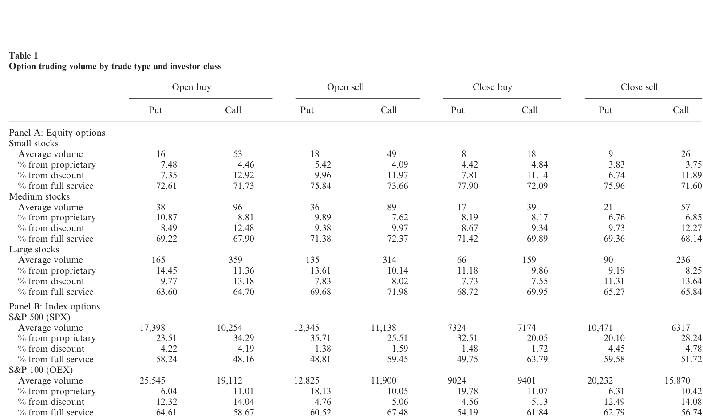
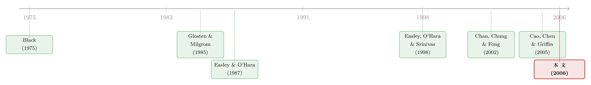

期权账本里的「先知」：谁在下注，比下注本身更重要
本文读的是 Pan & Poteshman (2006, Review of Financial Studies)：用一份能识别「谁、是买是卖、是开仓还是平仓」的 CBOE 期权成交底簿，作者发现由买方主动开仓构造的「看跌-看涨比 (put-call ratio)」能预测未来股价——低比值组比高比值组次日多赚 40 个基点、一周多赚 1%；而且这份预测力来自期权交易者手里的非公开私有信息，不是市场无效。
1 一桩「未卜先知」的旧案
先讲个故事。2002 年 7 月 25 日，《华尔街日报》报道，芝加哥期权交易所 (CBOE) 正在调查一只制药巨头 Wyeth 的股票期权上出现的「异常交易」。异常在哪？就在那个月稍早，Wyeth 期权的成交量突然蹿升；几天之后，《美国医学会杂志》发布了一份政府研究，指出长期服用 Wyeth 一款激素替代药的女性，乳腺癌、冠心病、中风和血栓的风险显著上升——消息一出，股价应声而落。
换句话说，有人在坏消息公开之前，已经先在期权上押好了注。
这类故事人人都听过，却很少有人能把它从轶事变成证据。原因很简单：你在事后总能挑出几个「期权先动、股价后动」的例子，但这既可能是先知，也可能只是幸存者偏差。要回答「期权成交量里到底有没有关于未来股价的信息」这个问题，你需要的不是几则新闻，而是一份覆盖成千上万只股票、十几年、并且能告诉你每一笔期权交易背后是谁、想干什么的底账。
Pan 和 Poteshman 拿到的，正是这样一份底账。
2 为什么是期权，而不是股票
在进入数据之前，得先想清楚一个更基本的问题：一个手握私有信息的人，为什么要跑到期权市场去交易，而不是直接买卖股票？
答案是两个字——杠杆。早在 1975 年，Black 就断言：杠杆 (leverage) 才是决定知情交易者会不会选择期权的关键变量。一份深度价外 (deep out-of-the-money, OTM) 的看涨期权，可能只要几美分，一旦标的股票大涨，回报却是几倍、几十倍。对一个确信股价要动的人来说，期权是把信息变现的「放大器」。
这个直觉，被 Easley, O'Hara, and Srinivas (1998)（下称 EOS）正式写进了一个多市场序贯交易模型 (multimarket sequential trade model)。它的源头，是 Glosten and Milgrom (1985) 那个经典的序贯交易框架：市场上有比例为 μ 的知情交易者，和 1−μ 的流动性交易者；做市商分不清眼前这单是谁下的，只知道有 μ 的概率来自知情者，于是他根据「买单/卖单」去更新对资产真实价值的信念，并把价格设到期望利润为零。信息，就这样一笔一笔地渗进了价格。
这套框架有一个对本文至关重要的性质：价格会瞬间吸收交易过程里的「公开」信息，却只能缓慢地吸收知情者持有的「私有」信息。 用贝叶斯学习的语言说，做市商的后验是逐步收敛的；而且可以证明，价格调整的速度恰好是
$$ \ln\!\left[\frac{1+\mu}{1-\mu}\right] $$
它随知情者比例 μ 单调递增。这个不起眼的式子，后面会变成本文一个反直觉结论的钥匙——先记住它。
EOS 模型在 Glosten-Milgrom 之上加了一层关键的自由度：知情交易者可以自己选择去股票市场还是期权市场。于是均衡分成两种：在「分离均衡 (separating equilibrium)」里，知情者只在股票市场交易，期权成交量对未来股价毫无信息；而在「汇聚均衡 (pooling equilibrium)」里，知情者同时活跃在两个市场，期权成交量于是携带了关于标的股票的信号。EOS 证明，当期权隐含的杠杆足够大、股票市场流动性足够低、或知情者整体比例足够高时，市场就落在汇聚均衡。
把全文压成一句话的检验：股票和期权市场，到底处在分离均衡还是汇聚均衡？ 本文的全部实证，都是在为这个二选一找证据。
3 识别策略：一个被「净化」过的看跌-看涨比
现在轮到本文最巧妙的一步。
要检验汇聚均衡，自然的做法是看「正向期权交易」（买看涨、卖看跌）会不会预示股价上涨，「负向期权交易」（买看跌、卖看涨）会不会预示下跌。问题是，公开的成交数据只告诉你成交了多少张、价格多少，并不告诉你这一笔是买方主动还是卖方主动、是开新仓还是平旧仓。 而对识别知情交易来说，这两个区分是命门——一个刚拿到坏消息的人，会去主动买入「新鲜」的看跌期权来开仓，而不是去平掉一个旧的看涨头寸。
Pan 和 Poteshman 的数据，恰恰能做到这个区分。他们用的是 CBOE 的一份特殊底簿：每一笔成交都标注了发起方是「买还是卖」「开仓还是平仓」，甚至还标注了发起者属于哪一类投资者。于是他们能精确地只取「非做市商为开新仓而买入」的看跌、看涨张数，构造出开仓买入的看跌-看涨比：
$$ X_{it} = \frac{P_{it}}{P_{it}+C_{it}} $$
这里 \(P_{it}\)、\(C_{it}\) 分别是第 \(t\) 日股票 \(i\) 上被开仓买入的看跌、看涨期权张数。一个握有利好的人买入新鲜看涨期权，会推高 \(C_{it}\)、压低这个比值；握有利空的人买入新鲜看跌期权，会推高 \(P_{it}\)、抬高这个比值。所以如果期权真是知情交易的舞台，那么用 \(X_{it}\) 去预测未来收益，回归系数就应当显著为负：
$$ R_{i,t+\tau} = \alpha + \beta\,X_{it} + \varepsilon_{i,t+\tau}, \qquad \tau = 1, 2, \ldots $$
原假设（市场处于分离均衡）则是：对所有 \(\tau\)，\(\beta = 0\)，看跌-看涨比毫无预测力。
被解释变量 \(R\) 有两种：原始收益与风险调整后收益。后者用市场、规模、价值、动量四因子模型剔除系统性成分——这背后有一层经济直觉：私有信息更可能是关于公司特质的，所以用风险调整后收益（即剔除系统成分后的特质部分）应当看到更强的预测力。
4 数据
- 来源：CBOE 期权成交与报价底簿，含开/平、买/卖、投资者类别标识。
- 样本期：
1990–2001。 - 观测单位：股票 \(i\) × 交易日 \(t\) 的开仓买入看跌/看涨张数。
- 投资者四类：自营交易员 (firm proprietary)、全服务券商客户（含对冲基金）、折扣券商客户（含线上券商）、其他公众客户。
表 1 给出了按交易类型（开仓买、开仓卖、平仓买、平仓卖）划分的成交量全景——正是这套分类，让作者能从一堆成交里精准地拎出「为开新仓而主动买入」的那部分量。

Table 1: provides a summary of option trading volume by trade type
5 主要结果：40 个基点与 1%
结果干净得让人有些意外。把股票按开仓买入看跌-看涨比分成五组：比值最低的一组（正向信号）次日的表现，比比值最高的一组（负向信号）高出 40 个基点以上；推到一周，差距超过 1%——而且是在风险调整后的口径上。
更妙的是它的衰减形态：把持有期一周一周往后拉，这种可预测性会逐渐消失。这正是 Glosten-Milgrom 那条逻辑的指纹——期权成交量里的信息，最终还是被股价吸收了，只是没有瞬间吸收。可预测性不是永动机，而是一段「信息正在渗入价格」的过程。
6 真正关键的一步：公开的，还是非公开的？
到这里，论文其实已经可以收工——它证明了期权市场里存在知情交易。但作者偏要再追问一句，而这一问，才是全文的分水岭。
因为「存在知情交易」并不等于「市场无效」。本文用的开仓买入量是非公开的（别人看不到 CBOE 这份底簿）。而信息类模型恰恰预言：价格会瞬间吸收交易里的公开信息，却只能慢慢吸收私有信息。所以这 40 个基点，很可能只是股价在向私有信息缓慢调整——这是知情交易，不是无效率。
怎么把两者掰开？作者构造了一个公开版的看跌-看涨比作对照。他们沿用 Lee and Ready (1991) 的算法，从公开可见的成交与报价记录里反推出哪些是买方主动发起的看跌、看涨量：
$$ X^{public}_{it} = \left(\frac{P_{it}}{P_{it}+C_{it}}\right)^{\text{Lee--Ready}} $$
然后把公开信号和非公开信号塞进同一个回归里同台竞技：
理论的预言非常具体：\(\beta\) 在量级和显著性上都应大于 \(\gamma\)；而且把预测期从 1 天拉长，\(\gamma\) 应当比 \(\beta\) 更快地塌掉。
数据给出的答案，比理论还要干脆。单独用公开信号 \(X^{public}\)，它只能预测未来一两个交易日，而且之后股价会反转——这意味着公开信号捕捉到的多半是「价格压力 (price pressure)」，是买卖盘把价格暂时推歪、随后回弹，而不是信息。而在同时含两个信号的回归里，非公开信号 \(\beta\) 仍保持着它那套「信息型」的预测形态，公开信号 \(\gamma\) 的预测力则彻底归零。
于是反转出现：本文那 40 个基点的经济来源，是期权交易者手里有价值的私有信息，而不是横跨股票与期权市场的某种无效率。一个公开就能套利的信号，会很快被市场吃掉；只有藏在底簿里、外人摸不到的那部分，才能持续预示明天的股价。
（关于「期权信息为何能预测股价」其实另有一派解释——后来有人论证，那点预测力很大程度上是做空成本伪装成的期权信号；这与本文的「私有信息」叙事形成了有趣的张力，可参见《期权里藏着的，不是先知，而是一张借券账单》。本文则把矛头牢牢钉在私有信息上。）
7 谁是「先知」，押注又押在哪张合约上
确认了私有信息这条主线，作者顺势把它拆得更细，回答三个问题。
信息越集中的股票，预测力越强吗？ 用 Easley, Kiefer, and O'Hara (1997) 与 Easley, Hvidkjaer, and O'Hara (2002) 提出的 PIN（知情交易概率，衡量模型里的 μ）做代理，作者把它写进交互项：
$$ R_{i,t+1} = \alpha + \beta\,X_{it} + \gamma\,X_{it}\ln(size_i) + \delta\,X_{it}\,PIN_i + \varepsilon_{i,t+1} $$
也就是让预测系数从一个常数 \(\beta\) 变成 \(\beta + \gamma\ln(size_i) + \delta\, PIN_i\)。结果：PIN 越高的股票，期权信号的预测力越强。这里有个微妙之处——还记得第 2 节那条价格调整速度 \(\ln[(1+\mu)/(1-\mu)]\) 吗？μ 越高，调整越快，按理可预测性反而应趋近于零。所以「高 PIN→高可预测性」恰恰说明：即便调整更快，信息仍没能在一天之内全部进价。而且高 PIN 通常对应小盘股，作者特意控制了规模，结论依然成立。
谁在交易这些信息？ 这是数据独一无二之处——它标了投资者类别。结论很符合直觉、却也耐人寻味：通过全服务券商下单的客户（其中包含对冲基金）给出的信号预测力最强；通过折扣券商下单的散户信号弱得多；而自营交易员的期权信号里完全没有关于未来股价的信息——在模型语境下，这说明自营盘是来期权市场做对冲的「无信息」玩家。
（一份「非公开成交簿揭示机构知情」的同源证据，亦可对照《财报还没发，机构已经站好了队》；而关于期权报价本身有没有「价格发现」，则见《期权报价里，到底有没有"先知"？》。）
杠杆越高，信息越浓吗？ 呼应 Black (1975) 与 EOS 的理论：用深度价外（高杠杆）合约构造的信号，预测力最强；低杠杆合约几乎不含信息。作者还担心这是不是「OTM 更活跃、知情者只是去了最流动的角落」的假象，于是比较了三档流动性相当的价内/价外组别，确认杠杆本身独立地决定了期权成交量的信息含量。
8 文献脉络
把这条线捋直，故事其实很清楚。
最早是 Glosten and Milgrom (1985) 把「交易能揭示信息、并推动价格」这件事正式建模；Easley and O'Hara (1987) 进一步允许不同的交易规模，确立了「成交量大小→价格」的通道。这两篇都是单一（股票）市场的世界。真正把衍生品作为另一个知情交易场所引进来的，是 Easley, O'Hara, and Srinivas (1998)——它给出了「分离 vs 汇聚」均衡，并指明杠杆是知情者选择期权的关键，成为本文的理论母体。

实证这边，早期证据是混合的。Amin and Lee (1997) 发现重大公司消息前，期权市场确有方向性头寸；Cao, Chen, and Griffin (2005) 在收购样本里发现并购前看涨期权放量能预示更高的收购溢价。但在「平常时期」，证据却相当悲观：Cao 等发现平时是股票量而非期权量含信息；Chan, Chung, and Fong (2002) 更是斩钉截铁地下了结论——期权成交量不领先股价。
本文恰恰站在这一片悲观之上完成了反转。它的杀手锏不是更花哨的模型，而是一份能区分开/平、买/卖、投资者类别的底簿——正是这份数据，让「平常时期期权量无用」的旧结论被推翻：原来不是期权量没用，而是过去的人手里只有被噪声污染过的公开量。
评论与延伸（Q&A + 研究方向）
(a) 几个可能的疑问
Q：40 个基点听起来诱人，这是个能赚钱的策略吗？
多半不能。这份信号建立在非公开的 CBOE 开仓买入底簿之上——普通人拿不到。本文反复强调，正因为它非公开，市场才没把它套走；一旦公开（即 Lee–Ready 版本），预测力就只剩一两天、还会反转。所以它是一个关于「信息如何进价」的学术发现，而非一份交易手册。
Q：「期权成交量含信息」和「期权价格/隐含波动率含信息」是一回事吗？
不是。本文用的是成交量（开仓买入的看跌、看涨张数）构造的方向性信号，走的是订单流揭示私有信息的逻辑；而隐含波动率、波动率微笑那类研究用的是价格。两条线可以互补，但识别的对象不同。
Q：怎么知道 40 个基点是信息，而不是知情者下单造成的「价格压力」？
这正是公开/非公开对照的精髓。价格压力的特征是「先推歪、后反转」，而本文发现公开信号恰恰呈现这种短命+反转的形态；非公开信号则是单调、持续、随期限缓慢衰减——后者符合信息逐步进价，而非价格压力。
Q：自营交易员的期权信号「完全没信息」，可信吗？这不反直觉吗？
在模型语境下并不反直觉。信息类模型对「知情/无信息」的定义只看信息集，不看身份。自营盘大量来自做市与对冲需求，方向性押注少，所以其期权流里几乎不含关于未来股价的方向信息——这反过来也佐证了「期权市场存在大量非投机性流动性交易」这一对模型很关键的假设。
Q：PIN 越高预测力越强，会不会只是小盘股效应？
作者直接处理了这点。
PIN与规模负相关，所以他们在回归里同时放进 \(X\cdot\ln(size)\) 和 \(X\cdot PIN\) 两个交互项，控制规模后 PIN 的效应依然在。当然，PIN 本身作为「知情比例」代理是否干净，是另一层可争论的问题。
Q：和「内幕交易」是一回事吗？
不必然。本文识别的是「私有信息」进价，私有信息既可能来自非法内幕，也可能来自合法的更优分析、更快的信息处理（如对冲基金）。论文没有、也无法区分信息的合法性，只区分它是否已被价格吸收。
(b) 几个可能的研究问题与提案
1. 把这套「开/平 × 买/卖」识别搬到信用衍生品上。 【经济故事】CDS、信用期权同样有高杠杆、同样吸引知情者；公司债违约/降级前，CDS 端是否先动？这是把 EOS 的「汇聚均衡」从股票-期权推广到债-CDS 的自然一步。 【可行性】中。难点在于拿到能区分开仓/平仓与发起方的 CDS 成交底簿（DTCC 数据受限）；若只有成交量与报价，需借 Lee–Ready 类算法反推，信号质量会打折——但这本身就能复制本文「公开 vs 非公开」的对照实验。
2. 外资持有人会改变期权信号的「先知度」吗？ 【经济故事】不同投资者类别的信息含量差异（全服务 vs 自营）是本文一大亮点。一个自然延伸：在以外资为主的市场或个股上，外资期权流是否携带更强（更弱）的私有信息？这能把「谁是知情者」的问题接到跨境信息传导上。 【可行性】中。需要带投资者国别/类别标识的期权成交数据，门槛较高；可在有外资持股披露的市场（如部分亚洲交易所）做。
3. 监管「实时披露」会不会杀死这条信息？ 【经济故事】本文的核心是「非公开才能持续预测」。那么一个把开仓买入流实时公开的政策实验，应当让 \(\beta\) 迅速向 \(\gamma\) 收敛、可预测性塌缩。这是对「公开即套走」机制的直接因果检验。 【可行性】高（若能找到这样的制度变更）。识别策略类似做空数据实时公开的研究——找一个期权流披露规则改变的断点，做事件研究/DiD。
4. 高杠杆=高信息，在零日期权 (0DTE) 时代还成立吗？ 【经济故事】本文证明深度价外、高杠杆合约信息最浓。如今 0DTE 期权杠杆极高、成交爆炸，按本文逻辑应是私有信息的「富矿」——但也可能被散户投机噪声淹没。到底哪股力量占上风？ 【可行性】高。近年期权成交数据可得，可直接重做本文的「按 moneyness/到期分组」检验，看信息含量随杠杆的单调关系是否被 0DTE 打破。
评述者的判断
本文的贡献，与其说在「证明期权含信息」，不如说在把一个被噪声搅浑的旧问题彻底厘清：过去说「平常期权量无用」，错就错在只有被污染的公开量；一旦拿到能区分开/平、买/卖、投资者类别的底簿，结论立刻反转，而且作者用「公开 vs 非公开」的对照，干净地把知情交易与市场无效两种解释分了开来——这是全文最漂亮的一笔，也是它经得起时间检验的原因。
要说对识别的担忧，主要有两处。其一，PIN 作为「知情者比例 μ」的代理近年屡受质疑（它可能更多反映流动性而非信息），所以「高 PIN→高可预测性」这条链虽好看，承重时要留心。其二，全文是一个相关性结构非常精巧、但终究是预测性回归的设计；它能干净地排除价格压力，却无法直接证明这些私有信息究竟来自合法分析还是非法内幕——而这恰恰是监管者最关心的那一面。
后续我最想看到的，是把这套「净化过的订单流」方法搬到信用市场与外资持有人上去：当违约风险、降级、跨境资金流叠加高杠杆衍生品时，「谁先知道、信息多久进价」会不会呈现出和股票期权不同的节律？那将是这条线最有价值的下一程。
参考文献
- Black, F. (1975). Fact and Fantasy in the Use of Options. Financial Analysts Journal 31, 36–41, 61–72.
- Cao, C., Chen, Z., and Griffin, J. M. (2005). Informational Content of Option Volume Prior to Takeovers. Journal of Business 78, 1073–1109.
- Chan, K., Chung, Y. P., and Fong, W.-M. (2002). The Informational Role of Stock and Option Volume. Review of Financial Studies 15, 1049–1075.
- Easley, D., and O'Hara, M. (1987). Price, Trade Size, and Information in Securities Markets. Journal of Financial Economics 19, 69–90.
- Easley, D., Kiefer, N., and O'Hara, M. (1997). One Day in the Life of a Very Common Stock. Review of Financial Studies 10, 805–835.
- Easley, D., Hvidkjaer, S., and O'Hara, M. (2002). Is Information Risk a Determinant of Asset Returns? Journal of Finance 57, 2185–2222.
- Easley, D., O'Hara, M., and Srinivas, P. (1998). Option Volume and Stock Prices: Evidence on Where Informed Traders Trade. Journal of Finance 53, 431–465.
- Glosten, L., and Milgrom, P. (1985). Bid, Ask, and Transaction Prices in a Specialist Market with Heterogeneously Informed Traders. Journal of Financial Economics 14, 71–100.
- Lee, C. M. C., and Ready, M. J. (1991). Inferring Trade Direction from Intraday Data. Journal of Finance 46, 733–746.
- Pan, J., and Poteshman, A. M. (2006). The Information in Option Volume for Future Stock Prices. Review of Financial Studies 19(3), 871–908.